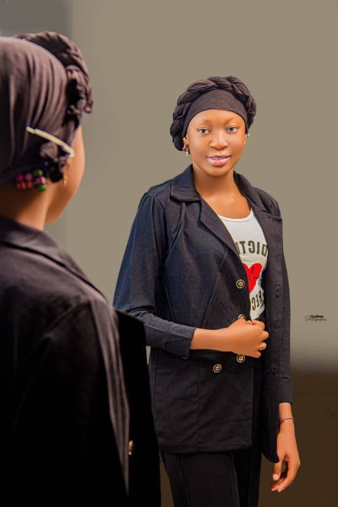

Repérez un talent
Découvrez son parcours, ses forces et le cap qu’il souhaite franchir.
2ème Cohorte Conversations Inspirantes
Derrière chaque parcours, une personne prête à écrire la suite. Découvrez ses forces, son ambition… et le début d’une belle collaboration.

Imaginer. Créer.LE CATALOGUE DES POSSIBLES
Un besoin dans votre équipe ? Un projet à faire grandir ? Explorez les profils et ouvrez la conversation.
Essayez un autre mot-clé ou élargissez les filtres.
UNE CONVERSATION PEUT OUVRIR LA SUITE
Découvrez son parcours, ses forces et le cap qu’il souhaite franchir.
Un emploi, un stage, une mission, un mentorat ou un partenariat : partez d’un objectif concret.
Personnalisez votre message, puis rejoignez WhatsApp pour prendre contact.